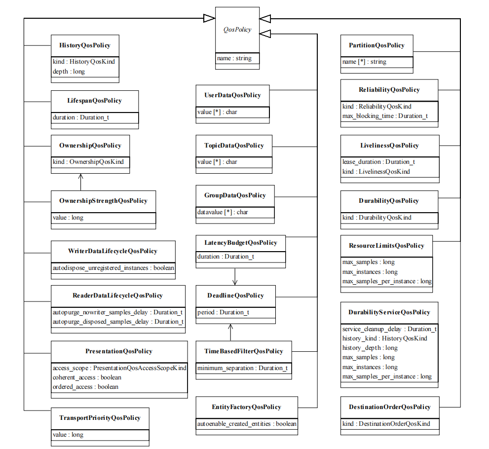

DDS QoS¶
QoS(Quality of Service)是一组控制DDS(Data-Distribution Service)服务行为某些方面的特征，QoS由各个派生自QosPolicy的QoS策略对象组成。

QoS标准规范¶
DDS的规范中规定了QoS的22种QoS策略，每种策略可以应用在不同的角色上，而针对某个角色，可以单独使用某一种QoS，也可以组合使用多种QoS策略。
1. USER_DATA¶
允许应用程序在已创建的Entity对象上附加自定义信息，以便当远程的应用程序发现自身时，可以利用自己提供的自定义信息进行一些操作，例如可以提供利用这些信息进行身份验证等安全操作。
USER_DATA的数据成员是一个字符数组（默认为空），用于存放提供的附加信息，其可以应用于所有DDS实体，且可以在已启动的实体上进行修改。
2. TOPIC_DATA¶
允许应用程序在已创建的Topic上附加自定义信息，这些信息同样可以在被远端应用发现时被访问和使用。
TOPIC_DATA与USER_DATA类似，数据成员是默认为空的字符数组，涉及Topic实体，且可以在已创建的实体上进行修改。
3. GROUP_DATA¶
允许应用程序在已创建的Publisher和Subscriber上附加自定义信息，并通过内置的topic模式进行传播。
GROUP_DATA与上述的TOPIC_DATA和USER_DATA类似，数据成员是默认为空的字符数组，但仅可应用于Publisher和Subscriber实体，且可以在已启动的实体上进行修改。
4. DURABILITY¶
DataWriter可以在网络中无DataReader时通过Topic发送消息，这样在DataReader加入Topic时就可能在Topic中已写入了一些该reader可能需要的数据信息。
DURABILITY定义了在DataReader加入前已存在于Topic的数据样本的处理行为，其包含一个DurabilityQosPolicyKind类型的kind变量。涉及Toipc、
DataReader、DataWriter实体，且不可对已启动的实体进行修改。
若想让
DataReader接收到加入之前的数据消息，除了设置DurabilityQosPolicy外，还需要将RelibilityQosPolicy设置为RELIABLE_RELIABILITY_QOS。
DurabilityQosPolicyKind：
- VOLATILE_DURABILITY_QOS: 服务不会为任何未匹配的
DataReader保留先前的数据，新加入的DataReader仅会接收到其加入匹配之后的数据信息。 - TRANSIENT_LOCAL_DURABILITY_QOS: 服务仅会将生命周期小于
DataWriter的数据保留在DataWriter的内存中。 - TRANSIENT_DURABILITY_QOS: 与
TRANSIENT_LOCAL_DURABILITY_QOS类似，服务仅会将数保留在内存中，区别是数据的保留时长与DataWriter无关。 - PERSISENT_DURABILITY_QOS: 服务会将数据永久性保存下来，所以在服务重启时数据仍可恢复。
默认情况下，DataReader是VOLATILE_DURABILITY_QOS, DataWriter是TRANSIENT_LOCAL_DURABILITY_QOS。DataWriter的kind必须大于等于DataReader的kind，
否则将会违背兼容性规则导致服务通信无法建立。
VOLATILE_DURABILITY_QOS<TRANSIENT_LOCAL_DURABILITY_QOS<TRANSIENT_DURABILITY_QOS<PERSISENT_DURABILITY_QOS
| DataWriter kind | DataReader kind | Compatibility |
|---|---|---|
| VOLATILE_DURABILITY_QOS | VOLATILE_DURABILITY_QOS | Yes |
| VOLATILE_DURABILITY_QOS | TRANSIENT_LOCAL_DURABILITY_QOS | No |
| VOLATILE_DURABILITY_QOS | TRANSIENT_DURABILITY_QOS | No |
| TRANSIENT_LOCAL_DURABILITY_QOS | VOLATILE_DURABILITY_QOS | Yes |
| TRANSIENT_LOCAL_DURABILITY_QOS | TRANSIENT_LOCAL_DURABILITY_QOS | Yes |
| TRANSIENT_LOCAL_DURABILITY_QOS | TRANSIENT_DURABILITY_QOS | No |
| TRANSIENT_DURABILITY_QOS | VOLATILE_DURABILITY_QOS | Yes |
| TRANSIENT_DURABILITY_QOS | TRANSIENT_LOCAL_DURABILITY_QOS | Yes |
| TRANSIENT_DURABILITY_QOS | TRANSIENT_DURABILITY_QOS | Yes |
| C++ | |
|---|---|
5. DURABILITY_SERVICE¶
定义当DURABILITY设置为TRANSIENT或PERSISTENT时DurabilityService的配置信息，包括HistoryQosPolicy和ResourceLimitsQosPolicy。
DURABILITY_SERVICE涉及Topic和DataWriter，且不能对已启动的实体进行修改，其数据成员：
- service_cleanup_delay: 控制服务何时能够删除相关数据实例的所有信息，默认为0。
- history_kind: 设置
HistoryQosPolicy中的类型，默认为KEEP_LAST。 - history_depth: 与
history_kind搭配使用，当history_kind=KEEP_LAST时，规定最大可保存的数据数量，默认为1。 - max_samples: 设置
ResourceLimitesQosPolicy中的最大数据数量，默认无限制。 - max_instances: 设置
ResourceLimitesQosPolicy中的最大实例数，默认无限制。 - max_samples_per_instance: 设置
ResourceLimitesQosPolicy中的每个实例的最大数据数量，默认无限制。
| C++ | |
|---|---|
6. PRESENTATION¶
定义对数据实例更改的样本呈现给订阅应用程序的方式，它控制对数据实例的更改可以相互依赖的程度，以及可以传播和维护的依赖关系类型。
PRESENTATION涉及Publisher和Subscriber，且不能对已启动的实体进行修改，其数据成员：
- access_scope: 规定跨越实体可以保留更改顺序和一致性的最大范围，默认为
INSTANCE。- INSTANCE: 范围只跨越一个实例，表示对一个实例的更改不会与对任何其他实例的更改相一致或有序。
- TOPIC: 范围覆盖同一个
DataWriter或DataReader的所有实例。 - GROUP: 范围覆盖同一个
Publisher或Subscriber中属于DataWriter或DataReader的所有实例。
- coherent_access: 规定是否在发布端保留所作更改的分组，以便在订阅端作为单元接收，默认为false。
- ordered_access: 规定是否在订阅端以和发布端一致的顺序查看更改，默认为false。
其中PRESENTATION在Publisher和Subcriber侧有兼容性要求，即Publisher的access_scope必须大于等于Subscriber的access_scope，且当coherent_access和
ordered_access在Publisher端开启，则Subscriber端也必须启动相应的配置。
INSTANCE<TOPIC<GROUP
| C++ | |
|---|---|
7. DEADLINE¶
定义发布端提供新数据或接收端接收到新数据的最长期限，超过期限则会触发告警。
DEADLINE涉及Topic、DataReader和DataWriter，且可以对已启动的实体进行修改，其包含一个period的成员，表示这个deadline，默认表示无穷。
DEADLINE对于DataWriter和DataReader同样有兼容性规则，即DataWriter侧的period必须小于等于DataReader侧的period。
| C++ | |
|---|---|
8. LATENCY_BUDGET¶
定义从数据被写入直到数据被插入到接收端缓存并收到通知的最大可接受的延迟时间。
LATENCY_BUDGET涉及Topic、DataReader和DataWriter，且可以对已启动的实体进行修改，其包含一个duration的成员，默认为0，表示该延迟应当最小化。
LATENCY_BUDGET对于DataWriter和DataReader同样有兼容性规则，即DataWriter侧的duration必须小于等于DataReader侧的duration。
| C++ | |
|---|---|
9. OWNERSHIP¶
定义是否允许多个DataWriter向同一个实例中写入数据或多个DataReader获取同一个实例的数据以及如何控制这些动作。
OWNERSHIP涉及Topic、DataReader和DataWriter，且不能对已启动的实体进行修改，其包含一个类型为OwnershipQosPolicyKind的kind的成员，默认为SHARED。
OwnershipQosPolicyKind:
- SHARED_OWNERSHIP_QOS: 允许多个实体共享同一数据实例的发布权和订阅权。
- EXCLUSIVE_OWNERSHIP_QOS: 仅允许一个实体拥有某个数据实例的发布权和订阅权。
OWNERSHIP对于DataWriter和DataReader同样有兼容性规则，即DataWriter与DataReader的kind必须相同。
| C++ | |
|---|---|
10. OWNERSHIP_STRENGTH¶
定义多个DataWriter向同一个实例进行修改操作的管理行为，仅当OwnershipQosPolicy的kind为EXCLUSIVE时生效。
OWNERSHIP_STRENGTH涉及DataWriter，且可以对已启动的实体进行修改，其包含一个value的成员，代表当前实例的强度，默认为0。
| C++ | |
|---|---|
11. LIVELINESS¶
定义服务用来确保网络上的特定实体仍处于活动状态的机制，用于区分定期更新数据的应用进程和偶尔更改数据的应用进程。
LIVELINESS涉及Topic、DataReader和DataWriter，且不能对已启动的实体进行修改，其包含：
- kind: 确定服务是否需要自动判断活泼性，或者是否需要等到发布端来判断活泼性，默认为AUTOMATIC。
- AUTOMATIC: 系统会自动监测实体的活跃性，并根据预定义的超时机制来确定实体的活跃状态。
- MANUAL_BY_PARTICIPANT: 实体的活跃状态 由Participant手动设置和管理。
- MANUAL_BY_TOPIC: 实体的活跃状态由Topic手动设置和管理。
- lease_duration: 表示实体活跃性的有效期限，即在该期限内，实体必须发送活跃性消息以保持活跃状态，默认为无限制。
LIVELINESS对于DataWriter和DataReader同样有兼容性规则，即DataWriter的kind必须大于等于DataReader的kind，且DataWriter的lease_duration
必须不大于DataReader的lease_duration。
AUTOMATIC<MANUAL_BY_PARTICIPATION<MANUAL_BY_TOPIC
12. TIME_BASED_FILTER¶
用于给DataReader过滤数据，以接受满足时间要求内的数据。
TIME_BASED_FILTER涉及DataReader，且可以对已启动的实体进行修改，其数据成员为minimum_separation，表示DataReader所关心的数据满足的最小间隔，默认为0，表示接受所有数据。
| C++ | |
|---|---|
13. PARTITION¶
定义新的逻辑分区，以控制数据的传输范围和接收范围。
PARTITION涉及Publisher和Subscriber，且可以对已启动的实体进行修改，包含一个name的列表，用于定义分区名字，默认为空。
14. RELIABILITY¶
定义服务提供和请求的可靠性等级。
RELIABILITY涉及Topic、DataWriter和DataReader，且不能对已启动的实体进行修改，其数据成员：
- kind: 定义服务对于传送的数据的行为，默认DataReader是BEST_EFFORT，DataWriter是RELIABLIE。
- BEST_EFFORT: 对数据不进行任何重传尝试，数据接收可能存在丢失或乱序。
- RELIABLE: 服务会对在其历史记录中的所有数据进行重传尝试。发布者发布的数据确保被接收者可靠地接收，通过重传和顺序控制等机制实现数据的完整性和顺序性。
- max_blocking_time: 配置写操作被阻塞的最大时间，若超过了最大时间，则会触发超时事件，默认是100ms。
RELIABILITY对于DataWriter和DataReader同样有兼容性规则，即DataWriter的kind必须大于等于DataReader的kind。
BEST_EFFORT<RELIABLE
15. TRANSPORT_PRIORITY¶
定义数据发送传输的优先级，以确保高优先级数据在网络中具有更高的传输优先级（取决于中间件和网络是否支持优先级机制）。
TRANSPORT_PRIORITY涉及Topic和DataWriter，且可以对已启动的实体进行修改，其包含一个value变量，用于表示优先级，值越大，优先级越高，默认为0。
| C++ | |
|---|---|
16. LIFESPAN¶
定义DataWriter写入的数据的最大有效时间。
LIFESPAN涉及Topic和DataWriter，且可以对已启动的实体进行修改，其包含一个duration变量，用于表示数据的生命期限，默认无限制。
| C++ | |
|---|---|
17. DESTINATION_ORDER¶
用于确定数据消息的逻辑顺序。
DESTINATION_ORDER涉及Topic、DataReader和DataWriter，且不能对已启动的实体进行修改，包含一个kind：
- BY_RECEPTION_TIMESTAMP: 表示数据是根据每个订阅者的接收时间进行排序的，因此每个订阅者可能得到不同的最终值。
- BY_SOURCE_TIMESTAMP: 表示数据是根据源（服务或应用程序）放置的时间戳排序的，在任何情况下，这都保证了所有订阅者中的数据最终值的一致性。
| C++ | |
|---|---|
18. HISTORY¶
定义服务在数据在被成功发送到一个或多个订阅者前受到多次更改的行为。
HISTORY涉及Topic、DataReader和DataWriter，且不能对已启动的实体进行修改，其数据成员：
- kind: 服务的行为策略，默认为KEEP_LAST。
- KEEP_LAST: 保留一定数量的历史数据。
- KEEP_ALL: 保留所有的历史数据。
- depth: 定义在KEEP_LAST时，必须保存在历史中的最大数据数量，默认为1。
| C++ | |
|---|---|
19. RESOURCE_LIMITS¶
定义服务可使用的资源限制。
RESOURCE_LIMITS涉及Topic、DataReader和DataWriter，且不能对已启动的实体进行修改，其数据成员：
- max_samples: 定义DataWriter或DataReader可以管理的与之关联的所有实例的最大数据数，默认无限制（FastDDS为5000）。
- max_instances: 定义DataWriter或DataReader可以管理的最大实例数，默认无限制（FastDDS为10）。
- max_samples_per_instance: 定义一个DataWriter或DataReader中的任一实例可以管理的最大数据数，默认无限制（FastDDS为400）。
其中max_samples必须大于等于max_samples_per_instance，HistoryQosPolicy中的depth必须小于等于max_samples_per_instance。
20. ENTITY_FACTORY¶
定义DDS实体在作为其他实体的工厂时的行为。
ENTITY_FACTORY涉及Domain Participant Factory、Domain Participant、Publisher、Subscriber，且可以对已启动的实体修改，但只影响之后创建的实体。
其包含autoenable_created_entities变量，用于标识作为工厂使用的实体是否会自动启用其创建的实例，默认为true。
| C++ | |
|---|---|
21. WRITER_DATA_LIFECYCLE¶
定义DataWriter关于其所管理的数据实例的生命周期的行为。
WRITER_DATA_LIFECYCLE涉及DataWriter，且可以对已启动的实体进行修改，包含autodispose_unregistered_instances变量，用于标识DataWriter
是否在实例未注册时自动丢弃该实例相关的数据，默认为true。
| C++ | |
|---|---|
22. READER_DATA_LIFECYCLE¶
定义DataReader关于其所管理的数据实例的生命周期的行为。
READER_DATA_LIFECYCLE涉及DataWriter，且可以对已启动的实体进行修改，其数据成员：
- autopurge_no_writer_samples_delay: 定义DataReader在实例状态变为NOT_ALIVE_NO_WRITERS_INSTANCE_STATE后必须保留有关实例的信息的最长持续时间。 在此时间过后，DataReader将清除实例的所有内部信息，包括将丢失的未采集样本。
- autopurge_disposed_samples_delay:定义DataReader在实例状态变为NOT_ALIVE_DISPOSED_INSTANCE_STATE后必须保留有关实例的信息的最长持续时间。 在此时间过后，DataReader将清除实例的所有样本。
| C++ | |
|---|---|
ROS¶
在ROS2中，用户代码可通过使用RCL提供的接口来配置所需的QoS（通过RMW与下层DDS实现进行衔接）。
在创建ros2实体时传入设定的QoS配置
其中rclcpp::QoS, rcl_action_client_options_t, rcl_action_server_options_t等都是对一个或多个rmw_qos_profile_t重组与封装。
附录¶
| QoSPolicy | Value | Meaning | Concerns | Changeable | FastDDS |
|---|---|---|---|---|---|
| USER_DATA | value | 用户自定义附加信息 | Domain Participant DataReader DataWriter |
√ | implemented |
| TOPIC_DATA | value | topic自定义附加信息 | Topic | √ | implemented |
| GROUP_DATA | value | 组自定义附加信息 | Publisher Subscriber |
√ | implemented |
| DURABILITY | kind | 定义数据的持久性存储方式 | Topic DataReader DataWriter |
× | implemented |
| DURABILITY_SERVICE | service_cleanup_delay history_kind history_depth max_samples max_instances max_samples_per_instance |
定义当DURABILITY设置为TRANSIENT或PERSISTENT时durability服务的配置 | Topic DataWriter |
× | unimplemented |
| PRESENTATION | access_scope coherent_access ordered_access |
定义数据传输的表示方式和编码方式 | Publisher Subscriber |
× | unimplemented |
| DEADLINE | period | 定义数据的截止时间或最后期限 | Topic DataReader DataWriter |
√ | implemented |
| LATENCY_BUDGET | duration | 定义数据传输的最大延迟时间 | Topic DataReader DataWriter |
√ | unimplemented |
| OWNERSHIP | kind | 定义数据发布和订阅的所有权管理方式 | Topic DataReader DataWriter |
× | implemented |
| OWNERSHIP_STRENGTH | value | 定义所有权共享模式下多个实体的所有权强度 | DataWriter | √ | implemented |
| LIVELINESS | kind | 定义实体的活跃性或存活状态的管理方式 | Topic DataReader DataWriter |
× | implemented |
| TIME_BASED_FILTER | minimum_separation | 用于基于时间的数据过滤和筛选 | DataReader | √ | unimplemented |
| PARTITION | name | 定义实体的分区和分组方式 | Publisher Subscriber |
√ | implemented |
| RELIABILITY | kind max_blocking_time |
定义数据传输的可靠性要求 | Topic DataReader DataWriter |
× | implemented |
| TRANSPORT_PRIORITY | value | 定义数据传输的优先级 | Topic DataWriter |
√ | unimplemented |
| LIFESPAN | duration | 定义数据在DDS系统中的生命周期 | Topic DataWriter |
√ | implemented |
| DESTINATION_ORDER | kind | 定义数据传输的目标顺序 | Topic DataReader DataWriter |
× | unimplemented |
| HISTORY | kind depth |
定义数据历史存储和访问方式 | Topic DataReader DataWriter |
× | implemented |
| RESOURCE_LIMITS | max_samples max_instances max_samples_per_instance |
定义DDS所使用的资源限制 | Topic DataReader DataWriter |
× | implemented |
| ENTITY_FACTORY | autoenable_created_entities | 定义DDS实体的创建方式和实体工厂的使用 | Domain Participant Factory Domain Participant Publisher Subcriber |
√ | implemented |
| WRITER_DATA_LIFECYCLE | autodispose_unregistered_instances | 定义数据写入者对数据的生命周期管理方式 | DataWriter | √ | unimplemented |
| READER_DATA_LIFECYCLE | autopurge_nowriter_samples_delay autopurge_disposed_samples_delay |
定义数据读取者对数据的生命周期管理方式 | DataReader | √ | unimplemented |